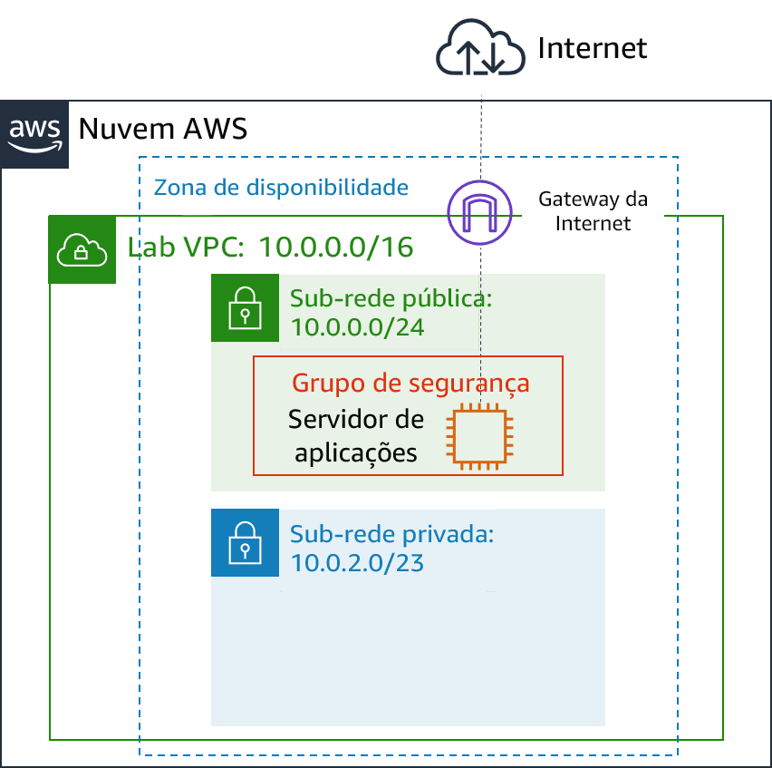
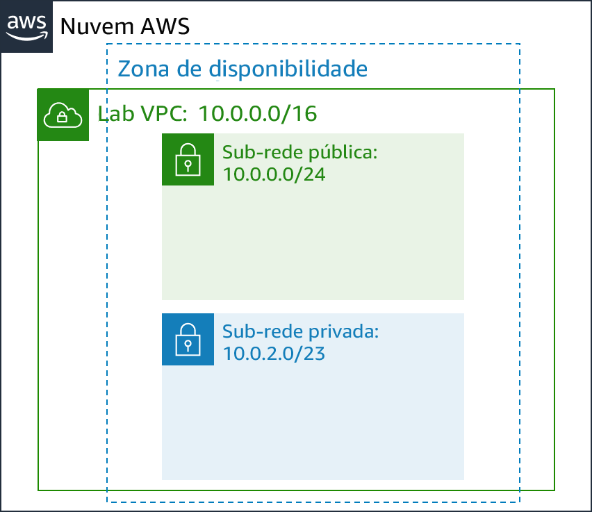

A rede tradicional é difícil. Envolve equipamentos, cabeamento, configurações complexas e habilidades especializadas. O Amazon Virtual Private Cloud (Amazon VPC) oculta a complexidade e simplifica a implantação de redes privadas seguras.
Este laboratório mostra como criar sua própria Virtual Private Cloud (VPC), implantar recursos e criar conexões de emparelhamento privado entre VPCs.
Depois de concluir este laboratório, você deverá ser capaz de:
No final deste laboratório, sua arquitetura será semelhante ao seguinte exemplo:

##Duração
Este laboratório levará aproximadamente 30 minutos para ser concluído.
Neste ambiente de laboratório, o acesso aos serviços e ações de serviço da AWS pode estar restrito àqueles necessários para concluir as instruções do laboratório. Você poderá encontrar erros se tentar acessar outros serviços ou executar ações além do que está descrito neste laboratório.
Na parte superior destas instruções, escolha Start Lab (Iniciar laboratório) para iniciar o laboratório.
Um painel Start Lab (Iniciar laboratório) é aberto com o status do laboratório.
Dica: se você precisar de mais tempo para concluir o laboratório, escolha novamente o botão Start Lab (Iniciar laboratório) para reiniciar o cronômetro do ambiente.
Aguarde até que o painel Start Lab (Iniciar laboratório) exiba a mensagem Lab status: ready (Status do laboratório: pronto) e, em seguida, escolha X para fechar o painel.
Na parte superior destas instruções, escolha AWS.
Essa ação abrirá o Console de Gerenciamento da AWS em uma nova guia do navegador. O sistema fará seu login automaticamente.
Dica: se uma nova guia do navegador não for aberta, normalmente você verá uma faixa ou um ícone na parte superior do navegador com uma mensagem informando que o navegador está impedindo que o site abra janelas pop-up. Escolha a faixa ou o ícone e depois Allow pop ups (Permitir pop-ups).
Organize a guia do Console de Gerenciamento da AWS para que ela seja exibida com essas instruções. O ideal é ver as duas guias do navegador abertas ao mesmo tempo, para facilitar o acompanhamento das etapas do laboratório.
Não altere a região, a menos que seja especificamente instruído a fazer isso.
Você começará usando a Amazon VPC para criar uma nova Virtual Private Cloud (VPC – Nuvem privada virtual).
Uma VPC é uma rede virtual dedicada à sua conta da Amazon Web Services (AWS). Ela fica isolada logicamente de outras redes virtuais na Nuvem AWS. É possível executar recursos da AWS, como instâncias do Amazon Elastic Compute Cloud (Amazon EC2), na VPC. Você pode configurar a VPC modificando sua faixa de endereços IP e criar sub-redes. Também é possível configurar tabelas de rotas, gateways de rede e configurações de segurança.
No Console de Gerenciamento da AWS, no menu Services (Serviços), escolha VPC.
O console da VPC oferece um assistente de VPC que pode criar várias arquiteturas de VPC automaticamente. No entanto, neste laboratório, você criará os componentes da VPC manualmente.
No painel de navegação à esquerda, escolha Your VPCs (Suas VPCs).
Uma VPC padrão é fornecida para que você possa executar recursos assim que começar a usar a AWS. Há também uma VPC compartilhada que você usará mais tarde no laboratório. No entanto, agora você criará sua própria Lab VPC.
A VPC terá um intervalo Classless Inter-Domain Routing (CIDR – Roteamento entre domínios sem classe) de 10.0.0.0/16, que inclui todos os endereços IP que começam com 10.0.x.x contendo mais de 65.000 endereços. Posteriormente, você dividirá os endereços em _sub-redes_separadas.
Escolha Create VPC (Criar VPC) e defina estas configurações:
Lab VPC10.0.0.0/16Se essas opções não aparecerem, cancele sua configuração. No painel de navegação à esquerda, certifique-se de que escolheu Your VPCs (Suas VPCs). Em seguida, escolha Create VPC (Criar VPC) novamente.
Selecione Lab VPC e certifique-se de que é a única VPC selecionada.
Na metade inferior da página, escolha a guia Tags.
Tags são úteis para identificar recursos. Por exemplo, você pode usar uma tag para identificar centros de custo ou ambientes diferentes (como desenvolvimento, teste ou produção).
Escolha Actions (Ações) e selecione Edit DNS hostnames (Editar nomes de host DNS).
Essa opção atribui um nome de sistema de nomes de domínio (DNS) amigável às instâncias do EC2 na VPC, como:
_ec2-52-42-133-255.us-west-2.compute.amazonaws.com_
Todas as instâncias do EC2 executadas na VPC agora receberão automaticamente um nome de host DNS. Você também pode adicionar um nome de DNS mais significativo (como app.exemplo.com) posteriormente usando o Amazon Route 53.
Uma sub-rede é um subintervalo de endereços IP dentro da VPC. Os recursos da AWS podem ser executados em uma sub-rede especificada. Use uma sub-rede pública para recursos que devem ser conectados à Internet e use uma sub-rede privada para recursos que devem permanecer isolados da Internet.
Nesta tarefa, você criará uma sub-rede pública e uma sub-rede privada:

A sub-rede pública será usada para recursos voltados para a Internet.
No painel de navegação à esquerda, escolha Subnets (Sub-redes).
Escolha Create subnet (Criar sub-rede) e configure estes ajustes:
Public Subnet (Sub-rede pública)10.0.0.0/24A VPC tem um bloco CIDR de 10.0.0.0/16, que inclui todos os endereços IP 10.0.x.x. A sub-rede que você acabou de criar tem um bloco CIDR de 10.0.0.0/24, que inclui todos os endereços IP 10.0.0.x. Eles podem ser semelhantes, mas a sub-rede é menor que a VPC devido ao /24 no intervalo CIDR.
Agora, você vai configurar a sub-rede para atribuir um endereço IP público automaticamente a todas as instâncias executadas nela.
Selecione Public Subnet (Sub-rede pública).
Escolha Actions (Ações) e selecione Modify auto-assign IP settings (Modificar configurações de IP de atribuição automática), e:
Embora essa sub-rede tenha sido denominada Public Subnet (Sub-rede pública), ela ainda não é pública. Uma sub-rede pública deve ter um gateway da Internet, que você anexará na próxima tarefa.
A sub-rede privada será usada para recursos que devem permanecer isolados da Internet.
Use o que você acabou de aprender para criar outra sub-rede com estas configurações:
Private Subnet (Sub-rede privada)10.0.2.0/23O bloco CIDR de 10.0.2.0/23 inclui todos os endereços IP que começam com 10.0.2.x e 10.0.3.x. Isso é duas vezes maior que a sub-rede pública, pois a maioria dos recursos deve ser mantida em sub-redes privadas, a menos que devam estar especificamente acessíveis pela Internet.
Sua VPC agora tem duas sub-redes. No entanto, a sub-rede pública é totalmente isolada e não pode se comunicar com recursos fora da VPC. Em seguida, você configurará a sub-rede pública para se conectar à Internet por meio de um gateway da Internet.
Um gateway da Internet é um componente da VPC dimensionado horizontalmente, redundante e altamente disponível que permite a comunicação entre instâncias em uma VPC e na Internet. Ele não impõe riscos de disponibilidade ou restrições de largura de banda no tráfego da rede.
Um gateway da Internet tem duas finalidades:
Nesta tarefa, você criará um gateway da Internet para que o tráfego da Internet possa acessar a sub-rede pública.
No painel de navegação à esquerda, escolha Internet Gateways (Gateways da Internet).
Escolha Create Internet Gateway (Criar gateway da Internet) e configure estes ajustes:
Lab IGW (IGW do laboratório)Agora, você pode anexar o gateway da Internet à Lab VPC.
Selecione Lab IGW (IGW do laboratório) e certifique-se de que é o único gateway que você selecionou.
Escolha Actions (Ações) e Attach to VPC (Anexar à VPC) e defina estas configurações:
Essa ação anexará o gateway da Internet à sua Lab VPC. Embora tenha criado um gateway da Internet e o tenha anexado à sua VPC, você também deve configurar a tabela de rotas de sub-rede pública para que ela use o gateway da Internet.
Uma tabela de rotas contém um conjunto de regras, chamado rotas, que são usadas para determinar para onde o tráfego de rede é direcionado. Cada sub-rede em uma VPC deve estar associada a uma tabela de rotas porque a tabela controla o roteamento da sub-rede. Uma sub-rede só pode ser associada a uma tabela de rotas por vez, mas você pode associar várias sub-redes à mesma tabela de rotas.
Para usar um gateway da Internet, a tabela de rotas de uma sub-rede deve conter uma rota que direcione o tráfego vinculado à Internet para o gateway da Internet. Se uma sub-rede estiver associada a uma tabela de rotas que tenha uma rota para um gateway da Internet, ela será conhecida como sub-rede pública.
Nesta tarefa, você vai:
No painel de navegação à esquerda, escolha Route Tables (Tabelas de rotas).
Várias tabelas de rotas serão exibidas, mas há apenas uma tabela de rotas associada à Lab VPC. Essa tabela roteia o tráfego localmente, portanto, é chamada de tabela de rotas privadas.
Na coluna VPC ID (ID da VPC), selecione a tabela de rotas que mostra Lab VPC (você pode expandir a coluna para ver os nomes).
Na coluna Name (Nome), escolha então digite o nome Private Route Table e escolha .
Na metade inferior da página, escolha a guia Routes (Rotas).
Há apenas uma rota. Ela mostra que todo o tráfego destinado a 10.0.0.0/16 (que é o intervalo da Lab VPC) será roteado localmente. Isso permite que todas as sub-redes em uma VPC se comuniquem entre si.
Agora, você criará uma nova tabela de rotas públicas para enviar tráfego público para o gateway da Internet.
Escolha Create route table (Criar tabela de rotas) e configure estes ajustes:
Public Route Table (Tabela de rotas públicas)Selecione Public Route Table (Tabela de rotas públicas), e certifique-se de que é a única tabela de rotas que você selecionou.
Na guia Routes (Rotas), escolha Edit routes (Editar rotas).
Agora você vai adicionar uma rota para direcionar o tráfego destinado à Internet (0.0.0.0/0) ao gateway da Internet.
Escolha Add route (Adicionar rota), em seguida configure estes ajustes:
0.0.0.0/0A etapa final é associar essa nova tabela de rotas à sub-rede pública.
Escolha a guia Subnet Associations (Associações de sub-rede).
Escolha Edit subnet associations (Editar associações de sub-rede).
Selecione a linha com Public Subnet (Sub-rede pública).
Escolha Save (Salvar)
A sub-rede pública agora é pública porque tem uma entrada de tabela de rotas que envia tráfego para a Internet por meio do gateway da Internet.
Para resumir, você pode criar uma sub-rede pública seguindo estas etapas:
Um grupo de segurança atua como um firewall virtual para que as instâncias controlem o tráfego de entrada e saída. Os grupos de segurança operam no nível da interface de rede elástica para a instância. Os grupos de segurança não operam no nível da sub-rede. Assim, cada instância pode ter seu próprio firewall controlando o tráfego. Se você não especificar um grupo de segurança específico no momento da inicialização, a instância será atribuída automaticamente ao grupo de segurança padrão da VPC.
Nesta tarefa, você criará um grupo de segurança que permite que os usuários acessem o servidor de aplicações via HTTP.
No painel de navegação à esquerda, escolha Security Groups (Grupos de segurança).
Escolha Create security group (Criar grupo de segurança) e configure estes ajustes:
App-SGAllow HTTP traffic (Permitir tráfego HTTP)Selecione App-SG.
Escolha a guia Inbound Rules (Regras de entrada).
As configurações de Inbound Rules (Regras de entrada) determinam qual tráfego é permitido chegar à instância. Você o configurará para permitir o tráfego HTTP (porta 80) que vem de qualquer lugar na Internet (0.0.0.0/0).
Selecione Edit rules (Editar regras).
Escolha Add Rule (Adicionar regra) e configure estes ajustes:
Allow Web access (Permitir acesso à Web)Você usa este App-SG na próxima tarefa.
Para testar se sua VPC está configurada corretamente, você executará uma instância do EC2 na sub-rede pública. Você também confirmará que pode acessar a instância do EC2 a partir da Internet.
No menu Services (Serviços), escolha EC2.
Escolha Launch Instance (Executar instância) e selecione Launch Instance (Executar instância) na lista suspensa. Configure estas opções:
Etapa 1 (escolher AMI):
AMI: Amazon Linux 2
Etapa 2 (escolher tipo de instância):
Etapa 3 (configurar detalhes da instância):
# Install Apache Web Server and PHPyum install -y httpd mysqlamazon-linux-extras install -y php7.2# Download Lab fileswget https://aws-tc-largeobjects.s3-us-west-2.amazonaws.com/ILT-TF-200-ACACAD-20-EN/mod6-guided/scripts/inventory-app.zipunzip inventory-app.zip -d /var/www/html/# Download and install the AWS SDK for PHPwget https://github.com/aws/aws-sdk-php/releases/download/3.62.3/aws.zipunzip aws -d /var/www/html# Turn on web serverchkconfig httpd onservice httpd startEtapa 4 (adicionar armazenamento):
Etapa 5 (adicionar tags):
Name (Nome)App Server (Servidor de aplicativos)Etapa 6 (configurar grupo de segurança):
Você receberá este aviso: You will not be able to connect to the instance (Você não será capaz de se conectar à instância). Esse aviso é aceitável porque você não estará se conectando à instância. Toda a configuração é feita por meio do script de dados do usuário.
Etapa 7 (revisar):
Uma janela Select an existing key pair or create a new key pair (Selecione um par de chaves existente ou crie um novo par de chaves) será exibida:
Uma página de status notifica que suas instâncias estão sendo iniciadas.
Você pode optar por renovar ocasionalmente para atualizar a exibição.
Se você configurou a VPC corretamente, a aplicação Inventory e esta mensagem devem ser exibidas: Please configure settings to connect to database (Defina as configurações para se conectar ao banco de dados). Você ainda não definiu nenhuma configuração de banco de dados, mas a aparência da aplicação Inventory demonstra que a sub-rede pública foi configurada corretamente.
Se a aplicação Inventory não aparecer, aguarde 60 segundos e atualize a página para tentar novamente. Pode levar alguns minutos para que a instância do EC2 inicialize e execute o script que instala o software.
Na parte superior destas instruções, escolha Submit (Enviar) para gravar seu progresso e, quando solicitado, escolha Yes (Sim).
Se os resultados não forem exibidos após alguns minutos, volte ao topo destas instruções e escolha Grades (Notas).
Dica: você pode enviar seu trabalho várias vezes. Depois de alterar o trabalho, escolha Submit (Enviar) novamente. Seu último envio é o que será gravado para este laboratório.
Para ver o feedback detalhado do seu trabalho, escolha Details (Detalhes) e depois View Submission Report (Visualizar relatório de envio).
Parabéns! Você concluiu o laboratório.
Escolha End Lab (Encerrar laboratório) na parte superior desta página e, em seguida, selecione Yes (Sim) para confirmar que você deseja encerrar o laboratório.
Um painel indica que DELETE has been initiated... You may close this message box now (A EXCLUSÃO foi iniciada... Você pode fechar esta caixa de mensagem agora).
Escolha o X no canto superior direito para fechar o painel.
©2020, Amazon Web Services, Inc. e suas afiliadas. Todos os direitos reservados. Este trabalho não pode ser reproduzido ou redistribuído, no todo ou em parte, sem permissão prévia por escrito da Amazon Web Services, Inc. É proibido copiar, emprestar ou vender para fins comerciais.